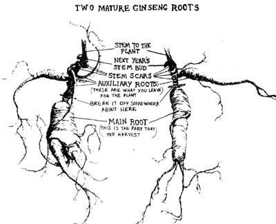

Many of us these days are trying to became less dependent on the more negative and profit-oriented
aspects of modern medicine and drug production. As an alternative, we're seeking out natural means of healing. Because of this search, herb companies are flourishing as the demand far crude botanicals increases and more and more people are taking to the fields and forests in search of health-giving herbs, barks and roots for themselves and others.
Most of us probably think of this return to nature as a positive trend. Nevertheless, it does lead to an indiscriminate gathering of botanicals, which threatens our supply of wild medicinal plants (especially those that are sought most eagerly for sale to dealers). I've been working with herbs fairly intensively over the last few years, and I have some ideas to help conserve this valuable resource.
How a wildcrafter goes about minimizing his impact depends largely on what part of a plant he collects. In gathering leaves, stems, twigs and flowers-for instance-it's most important not to take too much from one shrub or tree and not to pick the whole of one clump or bed. The idea is to reduce impact by allowing the patch to reseed, This same principle underlies the saying, "Never pick the first plant of its kind that you come upon." Also, it's clearly wasteful to pull up a growing thing by the roots if it's not the roots you're after.
The harvesting of barks is a more serious matter. A tree is nourished by the flow of sap which travels in vessels in the inner bark and it's this same living layer which is gathered for its various medicinal and healing properties. If you "girdle" the trunk in the process-debark it all the way around its circumference-the tree will die. Thus you're faced with the choice of severely scarring many trees or killing a few.
If you decide to take only some of the bark and save the tree, do your collecting from one side of the trunk only. I find this method most practical with small species and shrubs in which the space that must be healed is limited. I've gone back to check on some viburnums from which I had gathered bark two springs previously, and they were recovering well although it will probably be a few more years before the wounds are completely covered over.
If you're going to take one whole tree and strip it completely, try to locate an area where several of the same species are growing and choose the one that seems most crowded. Or you may be able to find a tree that has already fallen. Last spring I had the good luck to come upon slippery elms freshly toppled by heavy flooding along streams in the Carolinas. If you hang around logging operations, you can usually get all the pine and oak bark you want.
Roots are often the most commercially valuable botanicals unfortunately, since their collection is the most ecologically precarious operation in wild crafting. The damage ran be lessened by gathering roots in the fall, after a plant's flowers have gone to seed. Also, if you hunt even the more common species-sassafras, blue and black cohosh, goldthread, May apple, blood-root, wild ginger, etc -.it's best to spread your impact by digging here and there and from the center of a bed where it will be easier for the plants to fill in again.
Some roots (those of Solomon's seal and goldenseal, for instance) grow horizontally. If these are broken and the portion with the stem and next year's bud replanted, the plant will usually survive.
Goldenseal ( Hydrastis canadensis , sometimes called yellowroot) is becoming rare and should be treated with reverence. Therefore, those who use it medicinally may be glad to know of another species- Xanthorhiza simplissma, also known as yellowroot - which grows in the southern part of goldenseal's range. According to Joseph Meyer, author of The Herbalist, goldenseal is found " in shady woods in rich soils and damp meadows from southern New York to Minnesota, south to Georgia and Missouri, but principally in Ohio, Indiana, Kentucky and West Virginia" . -MOTHER,)
As far as appearance is concerned, the similarity between the two plants stops at the yellow color in the root. Hydrastis, a lover of rich upland soils, has a non-woody stem and only one or two unbrella-like leaves per plant. Xanthorhiza has a woody stem and a number of divided compound leaves and grows in sandy earth near riverbanks. Different as they look, the two have many of the same medicinal properties and are often used interchangeably. By choosing the much more common yellowroot whenever possible, we might be able to reduce tee pressure on goldenseal.
Another root-ginseng-is probably the most famous of botanicals and also the rarest. Most people in Western cultures find very little noticeable effect from this plant unless they have been taking it over a long period of time, or unless their diet is of very pure (usually vegetarian) foods. In the Orient, though, ginseng is highly valued for its healing, energizing, rejuvenating and life prolonging properties Our native wild root is desired considerably more than many of the Far East's own cultivated grades, and almost all the ginseng gathered and grown in this country is exported. With the market value at over $50.00 a pound for the dried unrefined roots, both herb lovers and money lovers seek this plant. Special efforts, therefore, must be made to preserve it.
Euell Gibbons states that there is probably more wild ginseng in America today than there was fifty years ago. Even at the high prices currently paid for wild long, it still takes a great deal of time, effort and knowledge to collect enough to significantly increase even a low income. Accordingly, Gibbons seems to feel that because of today's greater affluence and lessened financial need-the gathering of the valuable roots has perhaps decreased. This may be true in some areas of the country. I sincerely hope that it is.
Still, I can't forget the incident that sparked the writing of this article. I've done some talking recently to small herb buyers in West Virginia and other less prosperous parts of the southern Appalachians, and one of them showed me a bag full of several pounds of the tiniest ginseng roots else ever seen. When 'seng is cultivated, the grower waits six or eight years before he considers the crop ready to harvest. The specimens in that sack, however, were almost all less than three years old some were seedlings and almost all had been gathered before the plants could reproduce. It would take somewhere around a thousand such small fry to make a pound. That's about a nickel apiece for one of the rarest botanicals in the world. When I commented on tee minute size, the dealer shrugged and said, "That's what they brought in." It's this kind of collecting that is endangering ginseng populations.
True, another kind of wildcrafter still exists: the kind who waits until fall when the berries are ripe before he goes out sengin. When such a person digs ginseng roots, he plants the berries in the same place to insure a crop in the seasons to come. He may return to a favorite bed year after year, harvesting only the bigger specimens. Sometimes he'll bring a few seeds or small roots home to replant in the edge of the backyard or "in the holler behind the house, just to watch 'em grow".
Unfortunately, such care seems to be the exception. The "rule" is the pollution, exploitation and insensitivity of our materially oriented culture which is creeping up the creeks and tainting even the people of the hollows and ridges where the springs still run clear. That kind of rule, though, is made to be broken with a little awareness, common sense and conscientiousness.
OK, so you're wandering through some rich, shady "holler" and you actually stumble on a bed of 'seng. By all means, giggle and shiver and sing praises to your great cosmic doodah but if you do a dance of thanks giving, be careful not to trample any ginseng seedlings. They're hard to recognize because they have only three leaves and bear more resemblance to strawberry plants than to their parents. Then, when you're done rejoicing, you must decide whether you want to harvest any of your find (and if so, how).
Your decision should depend on the age of the older plants (they're probably on the uphill side of the group, with the younger ones down the slope where the seeds rolled). You can normally get some idea of an individual's stage of development by the number of "prongs": the stalks that radiate from the central stem and end in a palmate cluster of leaves (generally five). Ginseng can have anywhere from two to - I'm told-eight prongs, although I personally have never found a "bunch" with more than five. (The word "bunch" refers to one single plant and probably came into use because each specimen has the appearance of a clump.) When I counted the stem scars on the root of that five-pronged plant, I found that it was 20 years old.
Some stories tell of century-old ginseng (though I've also read that the plants tend to deteriorate after about 25 years). The four-pronged specimens I've dug have been from seven to fifteen years old, those with three prongs from three to six.
I have a general policy of not digging any 'seng that has less than four prongs. This gives each of the plants several years to produce seed, and also allows every root to attain a larger size. (If I found a three-pronged individual with a particularly thick stem which could indicate an older, larger root, however, I might be inclined to take it.)
Another point about gathering only older plants is that as ginseng ages it often puts out a new auxiliary root a sort of spare which is there to maintain and nourish the herb in case of damage to the main system. Since "damage to the root" is us ginseng diggers' middle name, we should take care to protect this standby root by the following method: The larger main root or roots are removed by digging very gently and cautiously around the plant. The smaller auxiliary-still attached to the upper, portions is then re-covered in the earth with as little disturbance as possible. The whole process can be done without even removing the secondary root from the ground. Usually the "bunch" will wilt at first, but it will appear completely recovered after a day or two and will be able to live and reproduce as if nothing had happened. In this way we can protect our ginseng and eat it too.
It's quite possible, of course, to cultivate ginseng as an alternative to gathering it wild. This is a delicate and fairly long term procedure, but can be very profitable. I heard a story about an old farmer in Iowa who planted a few back acres with 'seng. When the roots were ready to harvest and sell, he actually had Oriental men in business suits flying in from China to buy the crop.
The classic work on ginseng cultivation in America - Ginseng and Other Medicinal Plants by A.R. Harding -has been reprinted and is available in paperback for $4.00 from, Emporium Publications, P.O. Box 207, Boston, IV 02729. Harding's magazine, Fur-Fish-Game (2878 East Main St., Columbus, Ohio 43209), on sale at most rural newsstands, carries classified ads which include sources. ginseng seed and young roots. (Note: Some seeds are sold as "stratified", which means that they have been placed in moist earth all winter and will germinate in the spring. Unstratified seeds won't sprout until the beginning of the second growing season.)
A ginseng planting could be an ideal way to utilize any rich, shady hardwood lot you may have on your property. You can sell the seeds that are produced each year while your crop grows. Then, six years later, when the roots are mature and Chinese businessmen are swarming all over your place you can bet they haven't come to play ping-pong.
Copyright 2001-2002, Ogden Publications, Inc.
All rights reserved.
|
|
 |
|